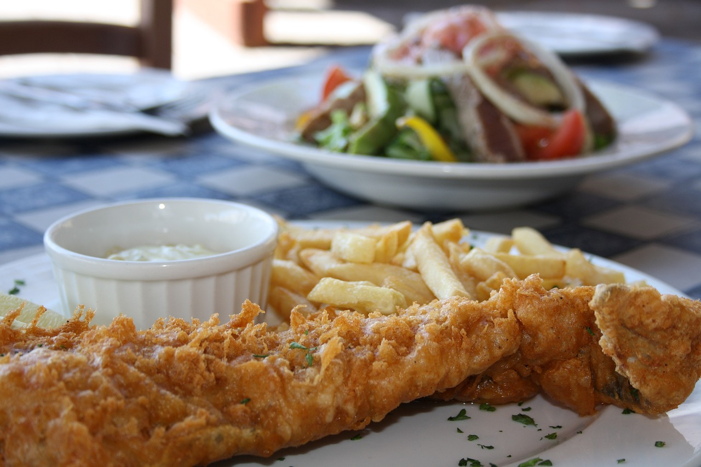

Restaurant pescăresc în București
Pescarul
Pasiune pentru savoarea pescărească
Preparate pescărești românești, gătite cu pasiune.
Telefon: 0722 196 448

Despre noi
Aici găsiți șalău „Bonne Femme” și preparate românești cu specific pescăresc.
Pescarul oferă preparate românești cu specific pescăresc, într-o ambianță caldă. Vă bucurați de gustul autentic al peștelui gătit atent, inclusiv șalăul „Bonne Femme”.
Locația ideală pentru iubitorii de bucătărie tradițională pe bază de pește.

-
Preparat autentic
Rețete tradiționale românești
-
Gust proaspăt
Pește gătit cu atenție
-
Atmosferă primitoare
Locație ideală pentru prieteni
Contact
Pe Bulevardul Nicolae Bălcescu, în București.
- Adresă
- Bulevardul Nicolae Bălcescu 9A, București
- Telefon
- 0722 196 448
Pentru program, sunați-ne.